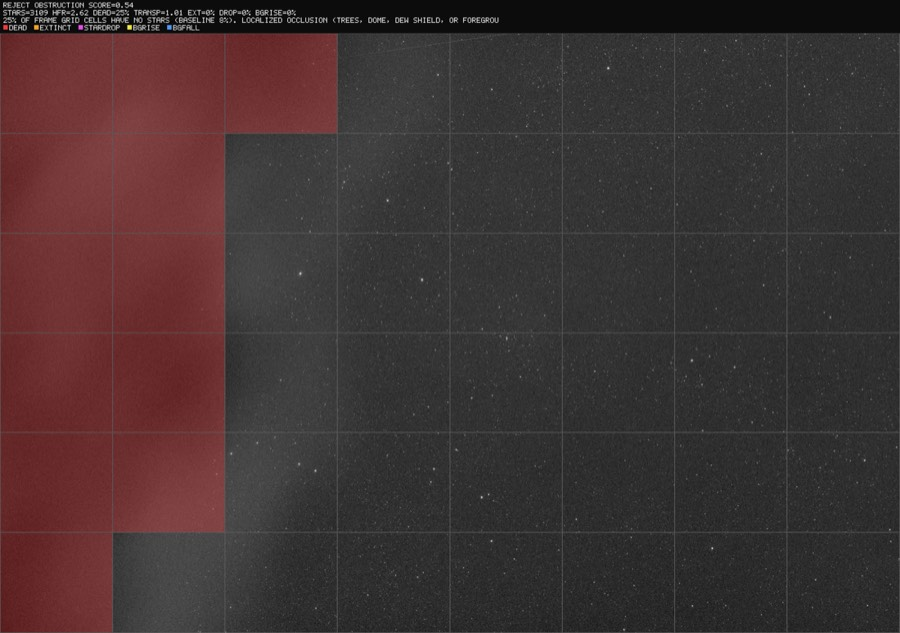
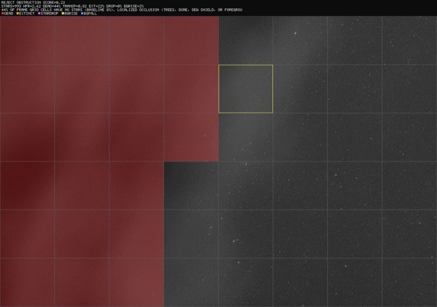
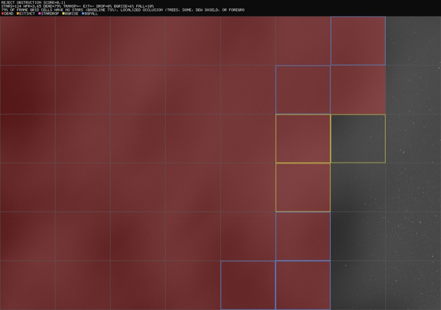
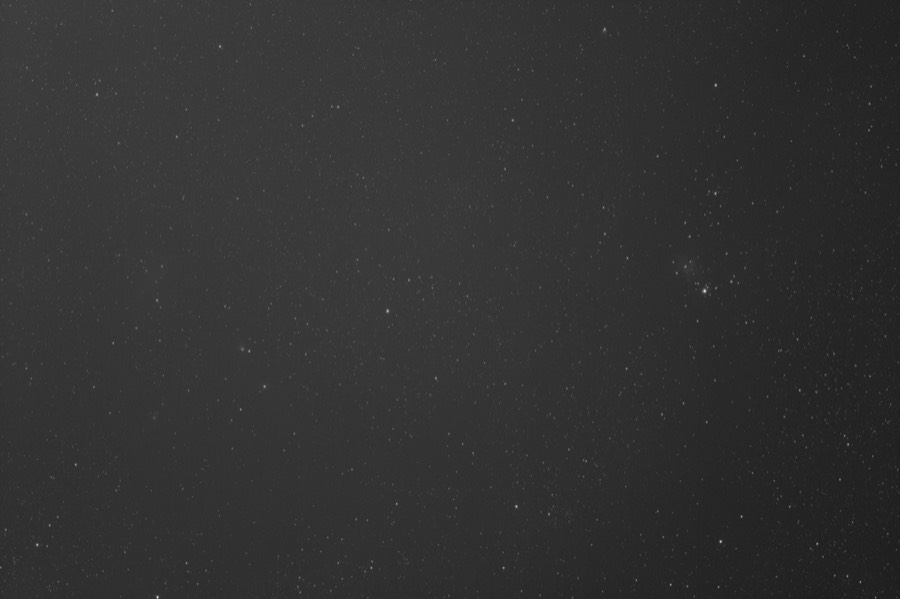
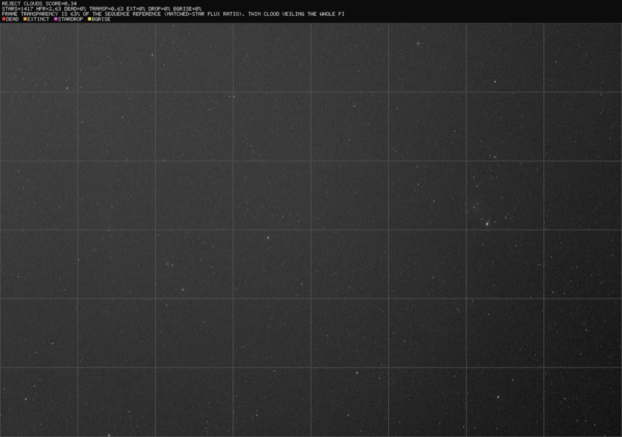
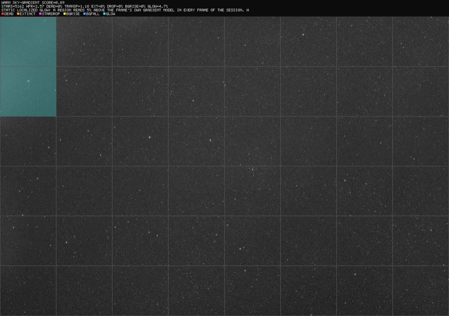

Quality Screening
Screen light frames for problems that ruin integrations but slip past conventional grading: occlusion from trees or a dome edge, small clouds, thin veils, errant light, and static glow. Every verdict can be rendered as an annotated diagnostic showing exactly which part of the frame drove the decision.
All detections are classical statistics — no machine learning, no training data, no network access. Thresholds were calibrated against real sessions (measured clean-frame envelopes across multiple nights and filters) and each detector carries regression tests pinning its behavior.
Why global metrics are not enough
Star count and HFR — what conventional graders use — barely move when a frame is partially ruined. Measured on a real session where a tree line progressively occluded the field:
- Frames with a visibly occluded corner kept star counts within normal variation — the rest of the field is fine.
- HFR stayed flat (~2.6) until the frame was more than 60% occluded — the surviving stars are still in focus.
- A thin cloud veil dimmed every star by 37% while star count, HFR, and background all looked normal — the frame was Accepted by the capture software's own grader.
- N.I.N.A.'s rolling star-count baseline adapts to slow occlusions: on the measured session it Accepted 31 of 33 occluded frames, including one that was 90% blocked.
The screening stack answers with signals that are local (per grid cell), photometric (flux ratios, not counts), and temporal (each cell compared to its own history) — with baselines that refuse to normalize slow-growing problems away.
The detection stack
| Signal | Catches | How |
|---|---|---|
| Dead cells | Occlusion (trees, dome, dew shield) | Fraction of 8×6 grid cells whose star density collapsed vs the frame's own median cell |
| Transparency | Thin uniform veils | Median flux ratio of stars matched against a per-sequence reference catalog; 0.7 = whole frame ~0.4 mag dimmer |
| Localized extinction | Small clouds | Per-cell flux ratios ÷ global transparency; a passing cloud is a coherent dip in one patch of stars |
| Star-share drops | Small opaque clouds | Each cell's share of the frame's stars vs that cell's own temporal median (Poisson-aware) |
| Background rise | Errant light (headlights, flashlights) | Per-cell background vs the cell's own history, after subtracting the frame's gradient (robust plane fit) |
| Background fall | Dark occluders, cloud shadow | Same, downward: something blocking skyglow reads darker, not milky |
| Static glow | Corner haze, lit occluder edges | Cells brighter than the frame's own gradient model — catches problems present from a session's first frame, which temporal baselines can never see |
The signals feed a sequence analyzer that scores every frame 0–1 relative to its session (same target, filter, and exposure; sessions split on 60-minute gaps) and classifies the likely cause. Verdicts: OK, WARN (recoverable or review-worthy — e.g. gradients that flat-ish processing can remove, glow that stacks into artifacts), REJECT (clouds and occlusion).
Quick start
# Screen a night of lights (no database needed)
psf-guard screen-fits "/path/to/2026-06-30/LIGHT"
# Render an annotated diagnostic PNG for every WARN/REJECT frame
psf-guard screen-fits "/path/to/LIGHT" --annotate /tmp/diagnostics
# Write [Auto] rejections into the Target Scheduler database
# (dry-run first; frames matched by filename AND capture timestamp)
psf-guard screen-fits "/path/to/LIGHT" --regrade-db my-db-slug --dry-run
psf-guard screen-fits "/path/to/LIGHT" --regrade-db my-db-slug
# Then archive the rejected files out of your stacking tree
psf-guard move-rejects --db my-db-slugFrom the web UI: open a target's Sequence view and press Scan Occlusion. The scan runs server-side in the background (progress shown live), results persist across restarts, and coverage badges and classifications appear on affected frames — "Select Clouded" bulk-selects flagged runs for rejection.
Reading the diagnostics
--annotate renders each flagged frame with the analysis grid
overlaid. Cells are marked by the signal that fired; the caption strip carries
the verdict, score, per-frame metrics, and the classifier's explanation.
| Marking | Meaning |
|---|---|
| red fill | dead cell — star density collapsed (occlusion) |
| orange fill | localized extinction — stars dimmed (small cloud), labeled with the cell's flux ratio |
| magenta fill | transient drop in the cell's share of stars |
| yellow border | transient background rise (errant light) |
| blue border | transient background fall (dark occluder / cloud shadow) |
| cyan fill | static glow above the frame's own gradient model |
Occlusion arriving

Heavy occlusion with a stray-lit edge

The advancing frontier

Thin cloud veil — pure photometry


No cell is tinted because nothing is locally wrong — only the matched-star flux ratios see it. This frame was Accepted by conventional grading.
Static corner glow

Tuning
Defaults were calibrated against measured clean-frame envelopes (42+ frames, 4 nights, multiple filters). The main knobs:
| Knob | Default | Notes |
|---|---|---|
--min-score | 0.35 | Composite score below which a frame is rejected |
--dead-cell-rise | 0.08 | Occlusion onset sensitivity; clean-frame jitter is ≤0.04, so 0.08 is a 2× margin |
--session-gap | 60 min | Splits sequences into sessions |
| glow threshold | 2.5% of sky and >30 ADU | The ADU floor keeps real narrowband nebulosity (measured 19–22 ADU) from false-flagging; true haze measured 48–103 ADU. Rig-specific. |
| transparency threshold | 0.80 | Global veil rejection level |
Safety properties
- Regrade matching is double-keyed: filename and capture timestamp (±10 min) must agree, so screening the wrong directory can never regrade the wrong row. Already-Rejected rows are never touched.
- Bounded baselines: a long run of anomalous frames is eventually accepted as a new steady state, so a permanent condition change (moonrise, light dome) cannot condemn the rest of a night. Occluded frames stay penalized through the absolute spatial term regardless.
- Sparse-field abstention: star-grid metrics abstain on legitimately star-poor frames (narrowband, short subs on slow optics) instead of reporting phantom dead cells.
- Single-frame blips don't reject: rise-based occlusion needs an adjacent frame to corroborate; photometric small-cloud calls rest on multi-star flux evidence and may be single-frame (clouds move).
Limitations
- Photometry requires the default HocusFocus detector (the N.I.N.A. detector port does not measure flux).
- The photometric reference requires stars present in ≥50% of a session's frames, so it is blind to regions occluded for most of a sequence — by design; that case belongs to the dead-cell metric.
- Monochrome FITS only (as with the rest of PSF Guard).
- The glow ADU floor is rig- and exposure-profile-specific.
The full technical document lives in the repository: docs/SCREENING.md.